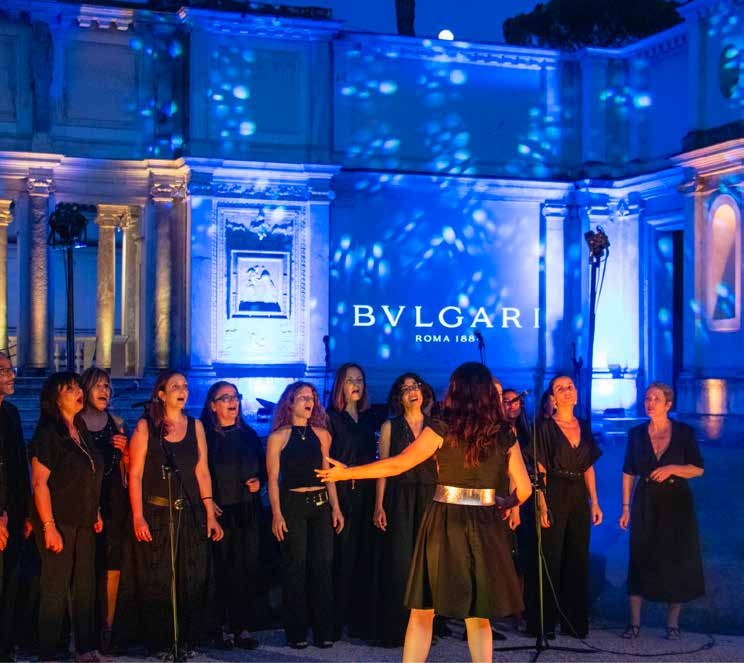

01 / 03
VR Installation · Heritage Brand · Museum Context
Serpenti
Serpenti
Infinito

[ VR installation — gallery view ] FIG. 01.1§ 01.1Problem
VR installations in museum contexts fail for a predictable reason: technical complexity lands in non-technical hands. Setups break, no one on site can diagnose them, and the visitor experience degrades in front of a paying audience.
§ 01.2Approach
Designed full operational documentation engineered for two distinct user groups.
- Technical crew — hardware checklists, network and power diagrams, troubleshooting trees, and daily operating routines.
- Visitors — onboarding designed around live, staff-led interaction rather than written instruction.
§ 01.3Result
Разработанные регламенты и пользовательская документация устранили трение на всех уровнях реализации — ни одного процедурного сбоя, ни одного испорченного пользовательского опыта. Обе площадки отработали без единой эскалации, а команда сохранила слаженность от первого запуска до последнего дня.